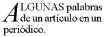
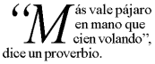

Contenidos
En CSS, las reglas de las equivalencias de patrones determinan cuales reglas de estilo se aplican a los elementos en la estructura del documento. Estos patrones, denominados selectores, pueden ir desde el simple nombre de un elemento hasta complejos patrones contextuales. Si todas las condiciones en el patrón son verdaderas para un determinado elemento, el selector equivale al elemento.
La distinción entre mayúsculas/minúsculas en los nombres de los elementos de los selectores, dentro del lenguaje del documento, depende del lenguaje del documento. Por ejemplo, en HTML, los nombres de los elementos son insensibles a la diferencia mayúsculas/minúsculas, pero en XML sí hacen distinción entre mayúsculas y minúsculas.
La siguiente tabla resume la sintaxis de los selectores CSS2:
| Patrón | Significado | Descripto en la sección |
|---|---|---|
| * | Equivale a cualquier elemento. | Selector universal |
| E | Equivale a cualquier elemento E (ej., un elemento de tipo E). | Selectores de tipos |
| E F | Equivale a cualquier elemento F que es descendiente de un elemento E. | Selectores de descendientes |
| E > F | Equivale a cualquier elemento F que es hijo de un elemento E. | Selectores de hijos |
| E:first-child | Equivale al elemento E cuando E es el primer hijo de su padre. | La pseudo-clase :first-child |
| E:link E:visited | Equivale al elemento E si E es el ancla de orígen de un hipervínculo cuyo destino aún no se ha visitado (:link) o que ya se visitó (:visited). | La pseudo-clase link |
| E:active E:hover E:focus | Equivale a E durante ciertas acciones del usuario. | Las pseudo-clases dinámicas |
| E:lang(c) | Equivale a un elemento de tipo E si está en el idioma (humano) c (el lenguaje del documento especifica como se determina el idioma). | La pseudo-clase :lang() |
| E + F | Equivale a cualquier elemento F precedido inmediatamente por un elemento E. | Selectores de adyacentes |
| E[foo] | Equivale a cualquier elemento E con el atributo "foo" asignado (cualquier valor). | Selectores de atributos |
| E[foo="warning"] | Equivale a cualquier elemento E cuyo atributo "foo" tiene un valor exactamente igual a "warning". | Selectores de atributos |
| E[foo~="warning"] | Equivale a cualquier elemento E cuyo atributo "foo" tiene un valor consistente en una lista de valores separados por espacios, uno de los cuales es exactamente igual a "warning". | Selectores de atributos |
| E[lang|="en"] | Equivale a cualquier elemento E cuyo atributo "lang" tiene una lista de valores separados por guiones que comienzan (desde la izquierda) con "en". | Selectores de atributos |
| DIV.warning | Sólo HTML. Igual que DIV[class~="warning"]. | Selectores de clase |
| E#myid | Equivale a cualquier elemento E cuyo ID es igual a "myid". | Selectores de ID |
Un selector simple es tanto un selector de tipos como un selector universal seguido inmediatamente por cero o más selectores de atributos, selectores de ID o pseudo-clases, en cualquier orden. El selector simple es equivalente si todos sus componentes son equivalentes.
Un selector es una cadena de uno o más selectores simples separados por combinadores. Los combinadores son: espacio en blanco, ">" y "+". El espacio en blanco puede aparecer entre un combinador y los selectores simples que están próximos.
Los elementos de la estructura del documento que equivalen a un selector son llamados sujetos del selector. Un selector que consiste en un solo selector simple se corresponde con cualquier elemento que satisface sus requisitos. Anteponiendo un selector simple y un combinador a una cadena se imponen restricciones adicionales para la equivalencia, de este modo los sujetos de un selector son siempre un sub-conjunto de los elementos que equivalen al selector simple del extremo derecho.
Un pseudo-elemento puede añadirse al último selector simple en una cadena, en cuyo caso la información del estilo se aplica a la sub-parte de cada sujeto.
Cuando varios selectores comparten las mismas declaraciones, pueden agruparse en una lista separada por comas.
En este ejemplo, condensamos tres reglas con idénticas declaraciones en una sola. Así,
H1 { font-family: sans-serif }
H2 { font-family: sans-serif }
H3 { font-family: sans-serif }
es equivalente a:
H1, H2, H3 { font-family: sans-serif }
CSS ofrece también otros mecanismos "resumidos", incluyendo las declaraciones múltiples y las propiedades resumidas.
El selector universal, escrito "*", se corresponde con el nombre de cualquier tipo de elemento. Es equivalente con cualquier elemento en la estructura del documento.
Si el selector universal no es el único componente de un selector simple, el "*" puede omitirse. Por ejemplo:
*[LANG=fr] y [LANG=fr] son lo mismo.
*.warning y .warning son lo mismo.
*#myid y #myid son lo mismo.
Un selector de tipo se corresponde con el nombre de un tipo de elemento en el lenguaje del documento. Un selector de tipo equivale con cada instancia del tipo de elemento en la estructura del documento.
La siguiente regla equivale a todos los elementos H1 de la estructura del documento:
H1 { font-family: sans-serif }
A veces, los autores pueden querer selectores que se correspondan con un elemento que es el descendiente de otro elemento en la estructura del documento (ej., "Que equivalga a aquellos elementos EM que están contenidos en un elemento H1"). Los selectores de descendientes expresan tal relación dentro de un patrón. Un selector de descendiente se compone de dos o más selectores separados por un espacio en blanco. Un selector de descendiente de la forma "A B" equivale cuando un elemento B en un descendiente arbitrario de algún elemento antepasado A.
Por ejemplo, considere las siguientes reglas:
H1 { color: red }
EM { color: red }
Aunque la intención de estas reglas es agregar énfasis al texto cambiando su color, el efecto se perderá en un caso como:
<H1>El título es <EM>muy</EM> importante</H1>
Resolvemos este caso complementando las reglas anteriores con una regla que asigna un color azul al texto siempre que un EM aparezca en cualquier lugar dentro de un H1:
H1 { color: red }
EM { color: red }
H1 EM { color: blue }
La tercer regla se corresponderá con EM en el siguiente fragmento:
<H1>Este <SPAN class="myclass">título es <EM>muy</EM> importante</SPAN></H1>
El siguiente selector:
DIV * P
equivale a un elemento P que es nieto o descendiente aún más lejano de un elemento DIV. Observe el uso opcional del espacio en blanco a ambos lados del "*".
El selector en la siguiente regla, que combina selectores de descendientes con selectores de atributos, equivalen a cualquier elemento que (1) tiene asignado el atributo "href" y (2) está dentro de un P que a su vez está dentro de un DIV:
DIV P *[href]
Un selector de hijo equivale cuando un elemento es el hijo de algún elemento. Un selector de hijo se compone de dos o más selectores separados por ">".
La siguiente regla asigna el estilo de todos los elementos P que son hijos de BODY:
BODY > P { line-height: 1.3 }
El siguiente ejemplo combina selectores de descendientes con selectores de hijos:
DIV OL>LI P
Equivale a un elemento P que es descendiente de un LI; el elemento LI debe ser hijo de un elemento OL; el elemento OL debe ser descendiente de un DIV. Observe que el espacio en blanco opcional alrededor del combinador ">" ha sido descartado.
Por información acerca de la selección del primer hijo de un elemento, por favor, ver la sección acerca de la pseudo-clase :first-child abajo.
Los selectores de hermanos adyacentes tiene la siguiente sintaxis: E1 + E2, donde E2 es el sujeto del selector. El selector equivale si E1 y E2 comparten el mismo padre en la estructura del documento y E1 precede inmediatamente a E2.
En algunos contextos, los elementos adyacentes generan objetos con formato cuya presentación es operada automáticamente (ej., cerrando los márgenes verticales entre cajas adyacentes). El selector "+" permite a los autores especificar un estilo adicional para los elementos adyacentes.
De este modo, la siguiente regla establece que cuando un elemento P sigue inmediatamente a un elemento MATH, no debe tener sangría:
MATH + P { text-indent: 0 }
El siguiente ejemplo reduce el espacio vertical que separa un H1 y un H2 que lo sigue inmediatamente:
H1 + H2 { margin-top: -5mm }
La siguiente regla es similar a la del ejemplo anterior, excepto que se agrega un selector de atributo. Así, el formato especial ocurre sólo cuando H1 tiene especificado class="opener":
H1.opener + H2 { margin-top: -5mm }
CSS2 permite a los autores especificar reglas que sean equivalentes con atributos definidos en el documento fuente.
Los selectores de atributos puede equivaler de cuatro maneras:
[att]
[att=val]
[att~=val]
[att|=val]
Los valores de los atributo deben ser identificadores o cadenas. La distinción entre mayúsculas/minúsculas en los nombres y valores de los atributos de los selectores depende del lenguaje del documento.
Por ejemplo, el siguiente selector de atributo equivale a todos los elementos H1 que especifican el atributo "title", cualquiera sea su valor:
H1[title] { color: blue; }
En el ejemplo siguiente, el selector equivale a todos los elementos SPAN cuyo atributo "class" tiene exactamente el valor "ejemplo":
SPAN[class=ejemplo] { color: blue; }
Múltiples selectores de atributos pueden ser usados para referirse a varios atributos de un elemento o, incluso, varias veces al mismo atributo.
Aquí, el selector equivale a todos los elementos SPAN cuyo atributo "hola" tiene exactamente el valor "Cleveland" y cuyo atributo "adios" tiene exactamente el valor "Columbus":
SPAN[hola="Cleveland"][adios="Columbus"] { color: blue; }
Los siguientes selectores ilustran la diferencia entre "=" y "~=". El primer selector equivale, por ejemplo, al valor "copyright copyleft copyeditor" para el atributo "rel". El segundo selector sólo será equivalente cuando el atributo "href" tenga el valor "http://www.w3.org/".
A[rel~="copyright"] A[href="http://www.w3.org/"]
La siguiente regla esconde a todos los elementos cuyo valor del atributo "lang" es "fr" (es decir, la lengua es el francés).
*[LANG=fr] { display : none }
La siguiente regla será equivalente a valores del atributo "lang" que empiecen con "en", incluyendo "en", "en-US" y "en-cockney":
*[LANG|="en"] { color : red }
De modo similar, la siguiente regla de una hoja de estilo auditiva permite leer un escrito en voz alta con voces diferentes para cada rol:
DIALOGUE[character=romeo]
{ voice-family: "Lawrence Olivier", charles, male }
DIALOGUE[character=julieta]
{ voice-family: "Vivien Leigh", victoria, female }
Las correspondencias tienen lugar en los valores de los atributos en la estructura del documento. Para lenguajes de documento fuera de HTML, los valores predeterminados de los atributos pueden definirse en una DTD o en cualquier otra parte. Las hojas de estilo deben diseñarse de manera que trabajen aún cuando los valores predeterminados no estén incluidos en la estructura del documento.
|
Nota de la traducción: DTD es el acrónimo de Document Type Definition (Definición del tipo de documento) y consiste en la definición de la sintaxis de la construcción de marcas que utiliza el documento. |
Por ejemplo, considere un elemento EJEMPLO con un atributo "notación" que tiene un valor predeterminado como "decimal". El fragmento DTD podría ser
<!ATTLIST EJEMPLO notación (decimal,octal) "decimal">
Si la hoja de estilo contiene las reglas
EJEMPLO[notación=decimal] { /*... opciones de la propiedad predeterminada ...*/ }
EJEMPLO[notación=octal] { /*... otras opciones ...*/ }
entonces para tomar los casos en los cuales este atributo es establecido por defecto y no explícitamente, podría agregarse la siguiente regla:
EJEMPLO { /*... opciones de la propiedad predeterminada ...*/ }
Debido a que este selector es menos específico que un selector de atributo, deberá ser usado para el caso predeterminado. Debe tomarse la precaución de que todos los otros valores del atributo que no tengan el mismo estilo que el predeterminado sean explícitamente cubiertos.
Para las hojas de estilo usadas con HTML, los autores pueden usar el punto (.) como una alternativa a "~=" cuando la correspondencia sea con el atributo "class". Así, en HTML, "DIV.valor" y "DIV[class~=valor]" tiene el mismo significado. El valor del atributo debe seguir inmediatamente al ".".
Por ejemplo, podemos asignar información de estilo a todos los elementos con class~="pastoral" como sigue:
*.pastoral { color: green } /* todos los elementos con class~=pastoral */
o simplemente
.pastoral { color: green } /* todos los elementos con class~=pastoral */
El siguiente sólo asigna estilo a los elementos H1 con class~="pastoral":
H1.pastoral { color: green } /* elementos H1 con class~=pastoral */
Dadas estas reglas, la primera instancia de H1 abajo no tendría el texto en verde, mientras que la segunda sí:
<H1>Verde, no</H1> <H1 class="pastoral">Muy verde</H1>
Para equivaler a un subconjunto de valores "class", cada valor debe ir precedido por un ".", en cualquier orden.
Por ejemplo, la siguiente regla equivale a cualquier elemento P a cuyo atributo "class" le ha sido asignado una lista de valores separados por espacios que incluyen "pastoral" y "marino":
P.pastoral.marino { color: green }
Esta regla equivale en el caso de class="pastoral rojo azul marino" pero no se corresponde en class="pastoral rojo".
Nota. CSS le otorga tanto poder al atributo "class", que los autores podrían conceptualmente diseñar su propio "lenguaje del documento" basados en elementos con casi ninguna presentación asociada (tales como DIV y SPAN en HTML) y asignando información acerca del estilo a través del atributo "class". Los autores deben evitar esta práctica ya que los elementos estructurales de un lenguaje de documento comúnmente tienen significados aceptados y reconocidos mientras que las clases definidas por el autor no pueden tenerlos.
Los lenguajes del documento pueden contener atributos que se declaran como del tipo ID. Lo que hace especial a un atributo del tipo ID es que dos de tales atributos no pueden tener el mismo valor; cualquiera sea el lenguaje del documento, un atributo ID puede ser usado para identificar a su elemento de manera excluyente. En HTML todos los atributos ID son denominados "id"; las aplicaciones XML pueden nombrar de manera diferente a los atributos ID, pero se aplica la misma restricción.
El atributo ID de un lenguaje de documento le permite a los autores asignar un identificador a una instancia del elemento dentro de la estructura del documento. Los selectores ID de CSS equivalen a una instancia del elemento basado en su identificador. Un selector ID de CSS contiene un "#" seguido inmediatamente por el valor de ID.
El siguiente selector de ID equivale al elemento H1 cuyo atributo ID tiene el valor "capitulo1":
H1#capitulo1 { text-align: center }
En el siguiente ejemplo, la regla de estilo equivale al elemento que tiene el valor de ID "z98y". La regla será, de este modo, equivalente al elemento P:
<HEAD>
<TITLE>Equivalencia con P</TITLE>
<STYLE type="text/css">
*#z98y { letter-spacing: 0.3em }
</STYLE>
</HEAD>
<BODY>
<P id=z98y>Texto espaciado</P>
</BODY>
En el ejemplo que sigue, sin embargo, la regla de estilo sólo equivale a un elemento H1 que tiene un valor ID de "z98y". La regla no será equivalente con el elemento P en este ejemplo:
<HEAD>
<TITLE>Equivalencia con H1 solamente</TITLE>
<STYLE type="text/css">
H1#z98y { letter-spacing: 0.5em }
</STYLE>
</HEAD>
<BODY>
<P id=z98y>Texto espaciado</P>
</BODY>
Los selectores de ID tiene una precedencia mayor que los selectores de atributos. Por ejemplo, en HTML, el selector #p123 es más específico que [ID=p123] en términos de cascada.
Nota. En XML 1.0 [XML10], la información acerca de qué atributos contiene el ID de un elemento está contenida en una DTD. Cuando analiza XML, las AU no siempre leen la DTD, y así no pueden saber qué es el ID de un elemento. Si el diseñador de una hoja de estilo conoce o sospecha que éste será el caso, deberá usar en cambio los selectores de atributos normales: [name=p371] en lugar de #p371. Sin embargo, el orden en la cascada de los selectores de atributos normales es diferente de los selectores de ID. Puede llegar a ser necesario agregar una prioridad "!important" a las declaraciones: [name=p371]
{color: red ! important}. Por supuesto, los elementos de los documentos XML 1.0 sin una DTD no tiene ID en absoluto.
En CSS2, el estilo se atribuye a un elemento basado en su posición dentro de la estructura del documento. Este sencillo modelo es suficiente para muchos casos, pero algunos temas comunes en la edición pueden no ser posibles por medio de la estructura del documento. Por ejemplo, en HTML 4.0 (ver [HTML40]), ningún elemento se refiere a la primera línea de una párrafo y, por consiguiente, ningún selector CSS simple puede refererirse a ella.
CSS introduce los conceptos de pseudo-elementos y pseudo-clases para permitir aplicar el formato basado en información que está fuera de la estructura del documento.
Ni los pseudo-elementos ni las pseudo-clases aparecen en el documento fuente o la estructura del documento.
Las pseudo-clases son permitidas en cualquier lugar dentro de un selector mientras que los pseudo-elementos sólo pueden aparecer después del sujeto del selector.
Los nombres de los pseudo-elementos y las pseudo-clases no hacen distinción entre mayúsculas y minúsculas.
Algunas pseudo-clases son mutuamente excluyentes, mientras otras pueden aplicarse simultáneamente al mismo elemento. En caso de reglas conflictivas, el orden de cascada normal determina el resultado.
Las aplicaciones del usuario de conformidad con HTML pueden ignorar todas las reglas con :first-line o :first-letter en el selector o, alternativamente, puede dar soporte sólo a un subconjunto de las propiedades en estos pseudo-elementos.
La pseudo-clase :first-child equivale a un elemento que es el primer hijo de algún otro elemento.
En el ejemplo siguiente, el selector equivale a cualquier elemento P que sea el primer hijo de un elemento DIV. La regla elimina el sangrado del primer párrafo de un DIV:
DIV > P:first-child { text-indent: 0 }
Este selector sería equivalente a P dentro de DIV en el siguiente fragmento:
<P> El último P antes de la nota. <DIV class="nota"> <P> El primer P dentro de la nota. </DIV>pero no se correspondería con el segundo P en el siguiente fragmento:
<P> El último P antes de la nota. <DIV class="nota"> <H2>Nota</H2> <P> El primer P dentro de la nota. </DIV>
La siguiente regla especifica 'bold' para el peso de la fuente de cualquier elemento EM que es algún descendiente de un elemento P que es un primer hijo:
P:first-child EM { font-weight : bold }
Observe que toda vez que las cajas anónimas no forman parte de la estructura del documento, no se cuentan en el cálculo del primer hijo.
Por ejemplo, el EM en:
<P>abc <EM>default</EM>es el primer hijo de P.
Los siguientes dos selectores son equivalentes:
* > A:first-child /* A es el primer hijo de cualquier elemento */ A:first-child /* Igual */
Las aplicaciones del usuario normalmente muestran los vínculos no visitados de un modo diferenciado de aquellos previamente visitados. CSS proporciona las pseudo-clases ':link' y ':visited' para distinguirlos:
Nota. Después de cierta cantidad de tiempo, las aplicaciones del usuario pueden elegir devolver un vínculo visitado a la condición de (no visitado) ':link'.
Los dos estados son mutuamente excluyentes.
El lenguaje del documento determina qué elementos son las anclas de orígen de los hipervínculos. Por ejemplo, en HTML 4.0, las pseudo-clases link se aplica a los elementos A con el atributo "href". De este modo, las siguientes dos declaraciones CSS2 tienen un efecto similar:
A:link { color: red }
:link { color: red }
Si el siguiente link:
<A class="externo" href="http://out.side/">link externo</A>ha sido visitado, esta regla:
A.externo:visited { color: blue }
provocará que sea azul.
Las aplicaciones del usuario interactivas a veces cambian el procesamiento en respuesta a las acciones del usuario. CSS proporciona tres pseudo-clases para los casos comunes:
Estas pseudo-clases no son mutuamente excluyentes. Un elemento puede recibir varias de ellas al mismo tiempo.
CSS no define qué elementos pueden estar en los estados anteriores o cómo se ingresa y se sale de los estados. Mediante el uso de scripts se puede decidir si los elementos reaccionan a los eventos del usuarios o no, y los distintos dispositivos y aplicaciones del usuario pueden tener diferentes maneras de apuntar o activar los elementos.
Las aplicaciones del usuario no son obligadas a redibujar el documento en uso a causa de las transiciones de las pseudo-clases. Por ejemplo, un hoja de estilo puede especificar que la propiedad 'font-size' de un vínculo :active debe ser mayor que la de un vínculo inactivo, pero como esto puede ocasionar que las letras cambien de posición cuando el lector selecciona el vínculo, una AU puede ignorar la regla de estilo correspondiente.
A:link { color: red } /* vínculos no visitados */
A:visited { color: blue } /* vínculos visitados */
A:hover { color: yellow } /* el usuario señala el vínculo */
A:active { color: lime } /* vínculos activos */
Observe que A:hover debe ir después que las reglas A:link y A:visited, de otro modo las reglas de cascada ocultarán la propiedad 'color' de la regla A:hover. También, debido a que A:active está ubicada después de A:hover, el color activo (lime) será aplicado cuando el usuario active y señale el elemento A.
Un ejemplo de combinación de pseudo-clases dinámicas:
A:focus { background: yellow }
A:focus:hover { background: white }
El último selector equivale a los elementos A que se encuentran en la pseudo-clase :focus y en la pseudo-clase :hover.
Para información acerca de la representación del foco en los contornos, consulte por favor la sección sobre foco dinámico en los contornos.
Nota. En CSS1, la pseudo-clase ':active' era mutuamente excluyente con ':link' y ':visited'. Este ya no es el caso. Un elemento puede ser ambos, ':visited' y ':active' (o ':link' y ':active') y la reglas normales de cascada determinan qué propiedades se aplican.
Si el lenguaje del documento especifica cómo se determina el lenguaje humano de un elemento, es posible escribir selectores en CSS que coincidan con elementos basado en su lenguaje. Por ejemplo, en HTML [HTML40], el lenguaje se determina por una combinación del atributo "lang", el elemento META y probablemente por la información del protocolo (tal como en los encabezados HTTP). XML utiliza un atributo denominado xml:lang, y puede haber otros métodos específicos del lenguaje del documento para determinar el lenguaje.
La pseudo-clase ':lang(C)' equivale si el elemento está en lenguaje C. Aquí C es un código de lenguaje tal como está especificado en HTML 4.0 [HTML40] y RFC 1766 [RFC1766]. Es validado de igual manera que el operador '|='.
Las siguientes reglas determinan las comillas para un documento HTML que está en francés o en alemán:
HTML:lang(fr) { quotes: '« ' ' »' }
HTML:lang(de) { quotes: '»' '«' '\2039' '\203A' }
:lang(fr) > Q { quotes: '« ' ' »' }
:lang(de) > Q { quotes: '»' '«' '\2039' '\203A' }
El segundo par de reglas especifica realmente la propiedad 'quotes' de los elementos Q de acuerdo al lenguaje de su padre. Esto se hace porque la elección del tipo de comillas se basa típicamente en el lenguaje del elemento que rodea la comilla, no en las propias comillas: como este fragmento de francés “à l'improviste” en medio de un texto en inglés usa el tipo de comillas propias del inglés.
El pseudo-elemento :first-line aplica estilos especiales a la primera línea de un párrafo. Por ejemplo:
P:first-line { text-transform: uppercase }
La regla anterior significa "convertir las letras de la primera línea de cada párrafo en mayúsculas". Sin embargo, el selector "P:first-line" no equivale a ningún elemento HTML real. Se corresponde con un pseudo-elemento que las aplicaciones del usuario con conformidad insertarán al comienzo de cada párrafo.
Observe que la medida de la primer línea depende de un número de factores, incluyendo el ancho de la página, el tamaño de la fuente, etc. De este modo, un párrafo HTML común como:
<P>Este es algún párrafo largo en HTML que será partido en varias líneas. La primer línea será identificada por una secuencia ficticia de marcas. Las otras líneas serán tratadas como líneas comunes dentro del párrafo.</P>las líneas que resultan partidas como sigue:
ESTE ES ALGÚN PÁRRAFO LARGO EN HTML QUE será partido en varias líneas. La primer línea será identificada por una secuencia ficticia de marcas. Las otras líneas serán tratadas como líneas comunes dentro del párrafo.pueden ser "re-escritas" por las aplicaciones del usuario para incluir la secuencia ficticia de marcas para :first-line. Esta secuencia ficticia de marcas ayuda a mostrar cómo se heredan las propiedades.
<P><P:first-line> Este es algún párrafo largo en HTML que</P:first-line> será partido en varias líneas. La primer línea será identificada por una secuencia ficticia de marcas. Las otras líneas serán tratadas como líneas comunes dentro del párrafo.</P>
Si un pseudo-elemento divide un elemento real, el efecto deseado a menudo se consigue con una secuencia ficticia de marcas que cierra y reabre el elemento. De este modo, si marcamos el párrafo anterior con un elemento SPAN:
<P><SPAN class="test"> Este es algún párrafo largo en HTML que será partido en varias líneas.</SPAN> La primer línea será identificada por una secuencia ficticia de marcas. Las otras líneas serán tratadas como líneas comunes dentro del párrafo.</P>la aplicación del usuario puede generar las marcas de inicio y cierre apropiadas para SPAN cuando inserta la secuencia ficticia de marcas para :first-line.
<P><P:first-line><SPAN class="test"> Este es algún párrafo largo en HTML que</SPAN></P:first-line><SPAN class="test"> será partido en varias líneas.</SPAN> La primer línea será identificada por una secuencia ficticia de marcas. Las otras líneas serán tratadas como líneas comunes dentro del párrafo.</P>
El pseudo-elemento :first-line sólo puede ser aplicado en elementos a nivel de bloque.
El pseudo-elemento :first-line es similar a un elemento a nivel de línea, pero con ciertas restricciones. Sólo las siguientes propiedades se aplican al pseudo-elemento :first-line: propiedades de la fuente, propiedades del color, propiedades del fondo, 'word-spacing', 'letter-spacing', 'text-decoration', 'vertical-align', 'text-transform', 'line-height', 'text-shadow' y 'clear'.
El pseudo-elemento :first-letter puede ser usado para las "capitulares" y "capitulares caídas", que son efectos tipográficos de uso frecuente. Esta clase de letra inicial es similar a un elemento a nivel de línea cuya propiedad 'float' es 'none', de otro modo es similar a un elemento flotante.
Estas son las propiedades que se aplican a los pseudo-elementos :first-letter: propiedades de la fuente, propiedades del color, propiedades del fondo, 'text-decoration', 'vertical-align' (sólo si 'float' es 'none'), 'text-transform', 'line-height', propiedades de los márgenes, propiedades del relleno, propiedades de los bordes, 'float', 'text-shadow' y 'clear'.
La siguiente CSS2 hará una capitular caída que abarca dos líneas:
<!DOCTYPE HTML PUBLIC "-//W3C//DTD HTML 4.0//EN">
<HTML>
<HEAD>
<TITLE>Capitular caída</TITLE>
<STYLE type="text/css">
P { font-size: 12pt; line-height: 12pt }
P:first-letter { font-size: 200%; font-style: italic;
font-weight: bold; float: left }
SPAN { text-transform: uppercase }
</STYLE>
</HEAD>
<BODY>
<P><SPAN>Algunas</SPAN> palabras de un artículo en un periódico.</P>
</BODY>
</HTML>
Este ejemplo sería formateado como sigue:
 [D]
La secuencia ficticia de marcas es:
<P> <SPAN> <P:first-letter> A </P:first-letter>lgunas </SPAN> palabras de un artículo en un periódico. </P>
Observe que la marca para el pseudo-elemento :first-letter es contigua al contenido (es decir, el carácter inicial), mientras que la marca de inicio del pseudo-elemento :first-line se inserta después de la marca de inicio del elemento al que está asignado.
Con el propósito de conseguir el formato de las capitulares caídas tradicionales, las aplicaciones del usuario pueden aproximar los tamaños de la fuente, por ejemplo para emparejar las líneas de base. Además, el contorno del signo puede ser tenido en cuenta al establecer el formato.
La puntuación (es decir, los caracteres definidos en Unicode [UNICODE] en las clases de puntuación "open" (Ps), "close" (Pe) y "other" (Po)), que precede a la primera letra debe se incluida, como en:
 [D]
Los pseudo-elementos :first-letter equivalen a partes de los elementos a nivel de bloque solamente.
Algunos lenguajes pueden tener reglas específicas acerca de cómo tratar ciertas combinaciones de letras. En alemán, por ejemplo, si la combinación de las letras "ij" aparece al comienzo de una palabra, ambas letras deberían ser consideradas dentro del pseudo-elemento :first-letter.
El siguiente ejemplo ilustra cómo pueden interactuar los pseudo-elementos que se superponen. La primera letra de cada elemento P será verde con una tamaño de fuente de '24pt'. El resto de la primer línea formateada será azul mientras que el resto del párrafo será rojo.
P { color: red; font-size: 12pt }
P:first-letter { color: green; font-size: 200% }
P:first-line { color: blue }
<P>Un texto corto que ocupa dos líneas</P>
Asumiendo que el corte de la línea ocurre antes de la palabra "ocupa", la secuencia ficticia de marcas para este fragmento podría ser:
<P> <P:first-line> <P:first-letter> U </P:first-letter>n texto corto que </P:first-line> ocupa dos líneas </P>
Observe que el elemento :first-letter está dentro del elemento :first-line. Las propiedades adjudicadas a :first-line son heredadas por :first-letter, pero son anuladas si la misma propiedad es determinada en :first-letter.
Los pseudo-elementos ':before' y ':after' pueden ser usados para insertar un contenido generado antes o después del contenido del elemento. Son explicados en la sección acerca de texto generado.
H1:before {content: counter(chapno, upper-roman) ". "}
Cuando los pseudo-elementos :first-letter y :first-line son combinados con :before y :after, se aplican a la primera letra o línea del elemento que incluye el texto insertado.
P.special:before {content: "Especial! "}
P.special:first-letter {color: #ffd800}
Esto procesará la "E" de "Especial!" en un amarillo oro.
|
Copyright © 1998 W3C (MIT, INRIA, Keio ), All Rights Reserved.
Traducción: Carlos Benavidez |